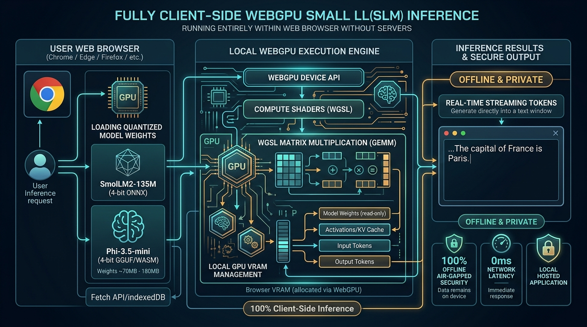

100% Client-Side WebGPU
Zero-Server Costs
Air-Gapped Privacy
🎬 3Blue1Brown Manim
WebGPU In-Browser Small LM Studio
Execute 4-bit quantized Small Language Models directly on your device GPU via browser WebGPU compute shaders. Zero server roundtrips, zero hosting costs, and absolute data confidentiality.
🏛️ Architecture Flow Diagram

Client Model Loader
@workgroup_size(16, 16) GEMM
Client GPU Stream & Hardware Telemetry Network Roundtrip: 0ms
=== WebGPU Hardware Device Initialized ===
[DEVICE] Adapter: GPUAdapter { vendor: "NVIDIA / Apple / Intel" }
[SHADERS] Compiled WGSL Matrix Multiplication Pipeline in 4.2ms.
[VRAM] Allocated 142.5MB local buffer memory in client browser tab.
[AIR-GAP] Zero external API calls emitted. 100% offline inference verified.